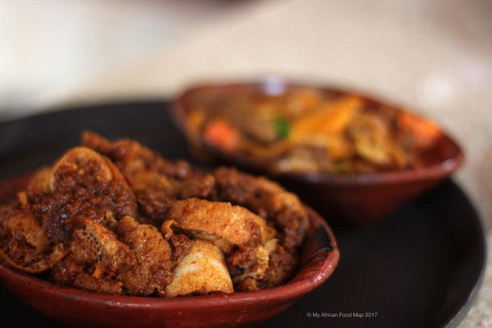

Quanta Firfir
Home

Quanta Firfir is another delight origniating form Ethiopia. It is a savory and mouth-watering dish. The blend of different spices with a mix of dry-aged meat makes this dish an outstanding one!
Ingredients
- Dry-aged beef(Quanta)
- Injera flat bread
- Berbere spice
- Salt and Pepper for flavoring
- Tomatos
- Onion
- Garlic
- Vegetable oil
- Clarified butter(Kibe)
Steps
- In a pot, start by carmilizing the onion on medium heat
- Next we introduce some minced Garlic and some Vegetable oil. Once they are cooked add some Berbere
- Then we add some chopped Tomatos and cook them until we get a pulp consistency. If it gets dry, adding some water is necessary
- We then add some quanta and allow it to soften up and absorb some of that flavor
- After, we add some water, Kibe and salt to the base. This makes the sauce where you break up your Injera and add it to the sauce. No mashing the Injera though!
- Finally, you can add some chili peppers for some aromatics. Enjoy your meal!